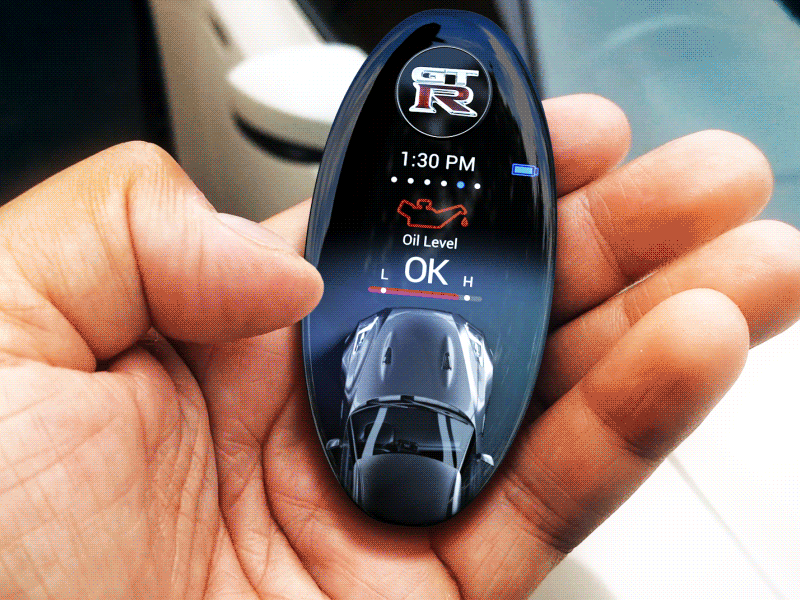

Crash Course on What’s Coming
To truly appreciate the art and science of technology, we must become versed in the subtle, often silent, shifts of innovation's undercurrents. It is there, in the unseen, in the intricacies of code and the silent whispers of machine learning algorithms, that the future is being shaped.
Navigating the Undercurrents of the Paradox of Control in Technology Trends
In a world enthralled by the relentless march of technological progress, it is the subtle, underlying forces—artificial intelligence, machine learning, computer vision, and cryptography—that shape our future, and we must grapple with the philosophical and practical implications of creating technologies that might eventually evade our control.
🌶️
In contemporary society, our gaze is often fixated on the dazzling surface phenomena: the rapid ascent of technological innovations, the latest gadget on the market, the new device upgrade, or the seamless integration of smart technology into our vehicles, our television sets, inside and out of our homes — the most vulnerable and exploited points of your personal data and digital footprint. However, if the surface shimmers, we're most likely to be drawn toward it. And luck would have it that John F. Kennedy popularized the saying that only floats on the surface of things.
"The rising tide can lift all boats."
2 msWith a transmission speed of just 2 milliseconds, UWB is much harder to hack and offers increased security and precisionConsider modern car key FOBs: initially a convenience, they soon became a target for thieves. Key fobs use specific frequencies to unlock only the associated vehicle. When you lock your car remotely, even from your kitchen, it sends a radio signal that, with equipment costing up to $12,000, can be intercepted, allowing thieves to drive off with your car. To counter this, automakers adopted ultra-wideband (UWB) technology, which has existed for over three decades. With a transmission speed of just 2 milliseconds, UWB is much harder to hack and offers increased security and precision. However, no system is without its vulnerabilities.

CryptographyA practice of securing information and communications through the use of codes so that only those for whom the information is intended can read and process it.In the Lexicon →Much like sailors captivated by the boats bobbing on the waves, we pay little heed to the sway of the mighty currents beneath—the foundational technologies that are quietly yet inexorably dictating where we are headed. It seems that too many people are focused on the ship’s rising with the tides — at which point, the cannons are loaded and everyone is looking for the same treasure. It's essential, therefore, to dive deep beneath the surface and explore not only what artificial intelligence (AI), machine learning, computer vision, and cryptography offer but also what they demand from us in terms of control and oversight. We need to understand what the current situation of what, is.
"Never create what you can’t control."
This adage echoes both a warning and wisdom that has rippled through time, yet is continually ignored or underestimated in the arena of technological development. The advent of AI and related fields promises a future as alluring as it is uncertain, painted with the allure of a world "powered entirely by the golden rays of the sun." Yet, the sun may also burn, thereby highlighting the contradictions of our time.
For thousands of years, our creativity has driven the development of tools, from simple abacuses aiding early traders and intellectuals to today's smartphones—compact devices that grant us access to vast information at our fingertips. Smartphones have globally connected us, surpassing previous limits of innovation. AI, once a mere fantasy, has now become a transformative reality. AI enhances our interconnected world, effortlessly processing vast amounts of data with precision. This innovative force is shaping an AI revolution aimed at improving efficiency and analysis, empowering us to master our daily activities more effectively. Its integration into daily life reflects our drive for advancement, powering an AI revolution focused on efficiency, data analysis, and increased independence.
Pop culture mirrors this reality with a tinge of caution; television series like "NeXt," "Person of Interest," and "Mrs. Davis." They all explore the trepidacious concept of autonomous technology slipping our tethers, a theme that resonates deeply with our fascination and fear of crafting entities that could very well eclipse our comprehension and control—a narrative that remains poignant, echoing our deepest anxieties well beyond their screen life. These three made it into my Top Ten list of science fiction becoming non-fiction by simply being in existence. Oh, the places you'll go!
Machine learning and computer vision allow AI to learn from large datasets, interpret visual information, and forecast results, enhancing machine capabilities. These technologies are transforming computers from mere tools into partners, decision-makers, and potentially, in the future, independent beings with their own goals and thoughts.
Cryptography, for its part, weaves a critical thread through the eye of the technological needle. A method of securing our digital lives, it embodies a deep irony: the enabler of both privacy and secrecy. The more intricate the cipher, the more control we believe we exert over our information. Yet, as cryptography grows more complex, it becomes a fundamental current driving the security of collective digital existence. It becomes ever-more challenging to ensure the integrity of what we seek to safeguard.
The intertwined progression of these fields—AI, machine learning, computer vision, and cryptography—brings us to the crux of the matter:
Can we create such profoundly influential systems while maintaining the necessary reins to ensure they do not deviate from our intended purposes?
The key FOB, in its simplicity, represents this quandary on a micro-scale. A small device enabling remote access to vehicles, it is a marvel of convenience yet indicative of our reliance on, and vulnerability to, the technology we trust.
As we stand at the helm of this technological odyssey, the warning to "never create what you can’t control" navigates us toward a complex question—what does control mean when the created begins to learn, adapt, and, potentially, act independently? There must be a balance between fostering innovation and maintaining enough mastery over our creations to prevent adverse outcomes. What became of the ethics committees that once ensured our safe passage? If this ‘Pratique’ no longer holds significance, this will undoubtedly cause some waves.
In contemplating the beautiful, entropic dance of progress, we must remain cognizant of the undercurrents. The allure of a sun-powered world is undeniable, but in our pursuit of golden tomorrows, we must be vigilant stewards of the technology we birth, lest we find ourselves in turbulent waters, no longer leading but being led by the currents of our own making. Therefore, as we sail forth, let the serenity of these depths remind us to respect the power of the concealed, to steer wisely, and to act with foresight, ensuring that our creations will enhance, not overpower, the human experience.
This Crash Course on What's Coming is not merely an informative dialogue; it's an imperative reflection on our course through the technological seas. The depth of understanding we seek should not only encompass AI, machine learning, computer vision, and cryptography but should also imbue us with the wisdom to recognize the high stakes of these powerful forces. It beckons us to look beyond the horizon, to learn the language of the currents beneath, and forewarns us to engage with prudence. The technological odyssey upon which we embark is rich with promise and peril, and our narrative will hinge upon the delicate fulcrum of control.
To truly appreciate the art and science of technology, we must become versed in the subtle, often silent, shifts of innovation's undercurrents. It is there, in the unseen, in the intricacies of code and the silent whispers of machine learning algorithms, that the future is being shaped. The dialogue around AI's potential and pitfalls, our cryptographic safeguards, and the autonomy we cede to our smart devices must be ongoing and pervasive. We are not mere passengers on this voyage; we are the navigators, accountable for the trajectory we chart.
Ultimately, this essay posed by the initial quote, "Never create what you can’t control," serves as a Socratic entreaty to the architects of tomorrow. It encourages us to heed the lessons of the stories unfolding around us—views encapsulated in the cyclical patterns of technological acceptance and anxiety in pop culture phenomena like “NeXt”, which seem to resurface with relevancy as preludes to their prophecies.
We must therefore aim for equilibrium in innovation, tethering the vast capabilities of technology to the grounding force of humane intentions. This is our crash course in cautious creation. This is our invitation to mold a world that harmonizes with, rather than dominates, the human narrative—a world where every technological key FOB in our hands serves as a constant reminder of the grander responsibility imbued in the very act of creation.